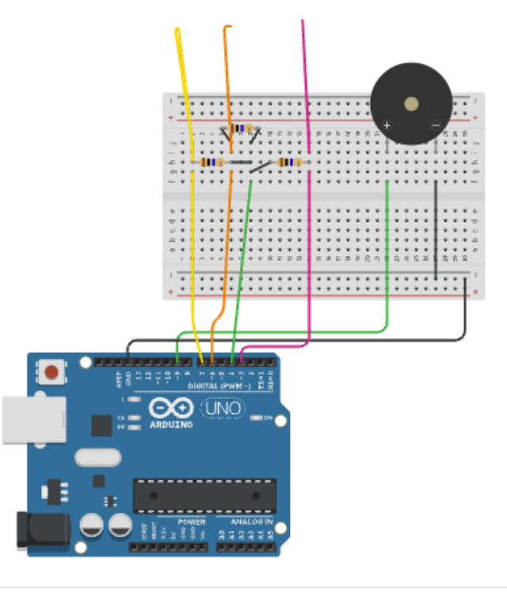
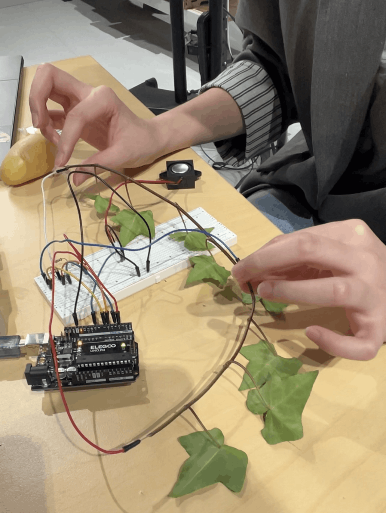
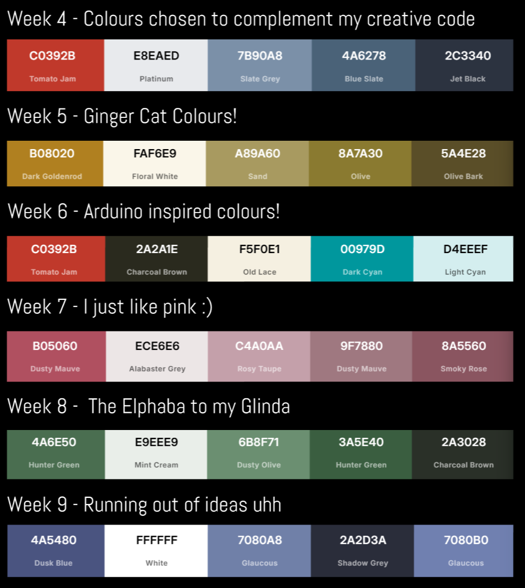
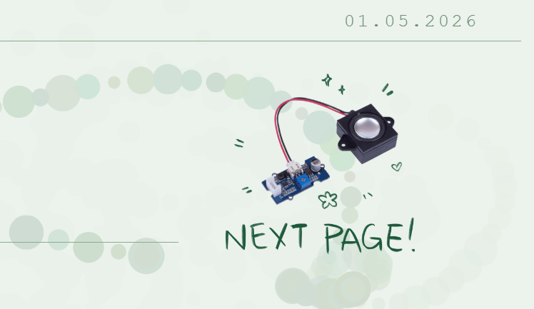

In week 8's tutorial, we made make shift instruments using the arduino circuit. My piano skills from when i was 8 really came in clutch here hahahaha
Listen to our version of Mary had a little lamb and Hot Cross buns here!

